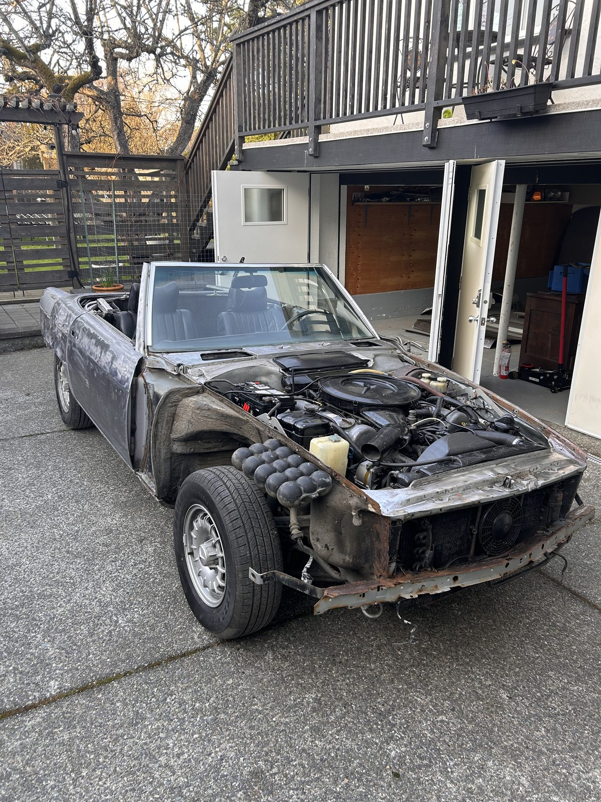
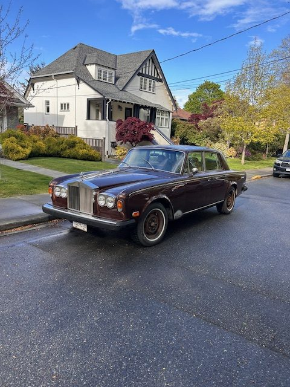
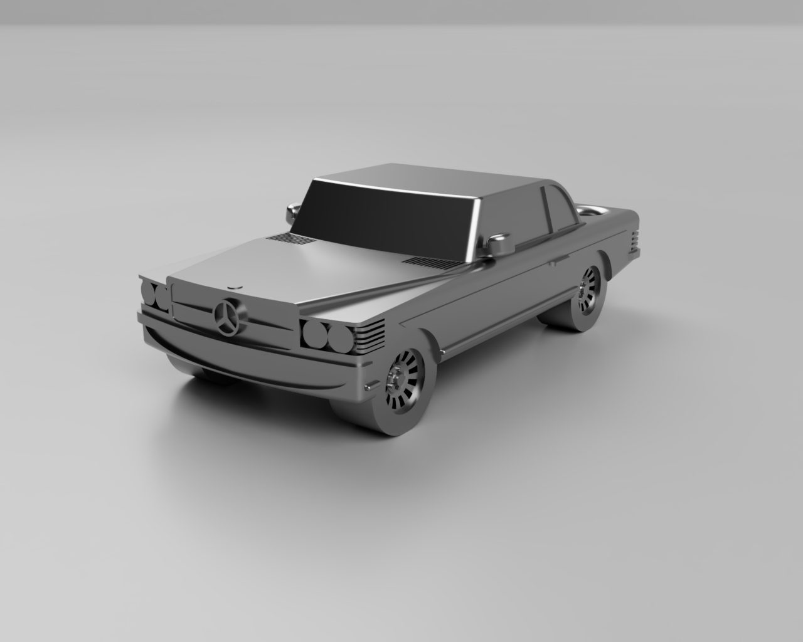
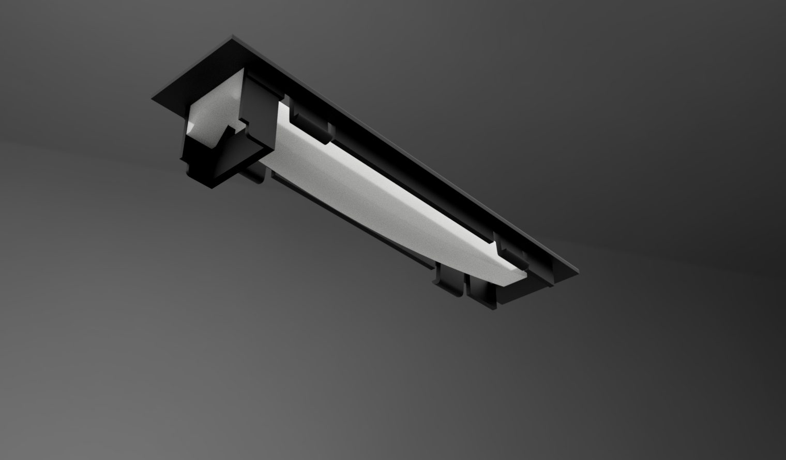

Car Restoration

Procured three cars abandoned on the oceanfront for over 30 years and restored two of them to safe driving condition.
1973 Mercedes 450SL
Deciphered obsolete manuals and 50-year-old diagrams to learn and perform the repairs needed to get it safely back on the road.
Design Integration
Used CAD to reverse-engineer and manufacture broken components, as well as a 3D-printed keychain and modeled AC controls.
1976 Rolls-Royce Silver Shadow
Completed a full mechanical restoration, including a complete tear-down and rebuild of the high-pressure hydraulic system used for braking and active suspension. Due to the complexities of this system, improper maintenance often results in these vehicles ending up in a junkyard — learning to repair components instead of replacing them, and understanding each component's place in the system, allowed a full rebuild into functioning condition.
Gallery



